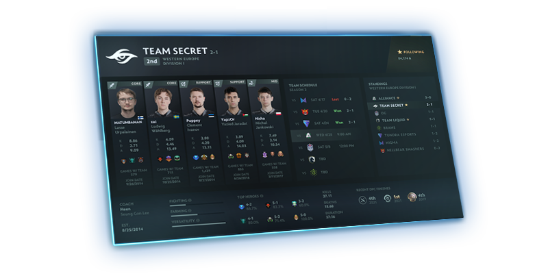

Season 2 of this year's DPC slate is up and running, and today's update includes new Team Profiles, the next piece in an evolving platform of features designed to help you track all the action in Dota competitive play.

You can check out profiles for all Division I and Division II teams by heading to the Watch section of the game. Click on any team to visit their hub which contains team and player stats plus top heroes. You'll also find each team's season schedule which provides an easy way to view upcoming opponents or watch past replays. Stay tuned for more updates as we move through the season of play. We've also added a spoiler-free mode for all DPC content in the client. To use it, just click the Live option in the upper-right of the Watch section and you’ll be opted out of live updates. In this mode you'll have manual controls for revealing match results and current standings. Team profiles will not only provide a way for you to stay connected to your favorite teams, but they will also be an integral part of the upcoming fan content system that’s currently in the works.
NEXT PAGE →